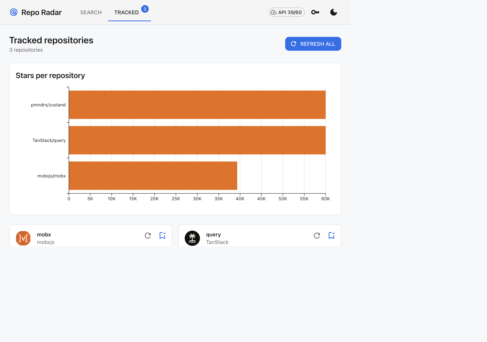
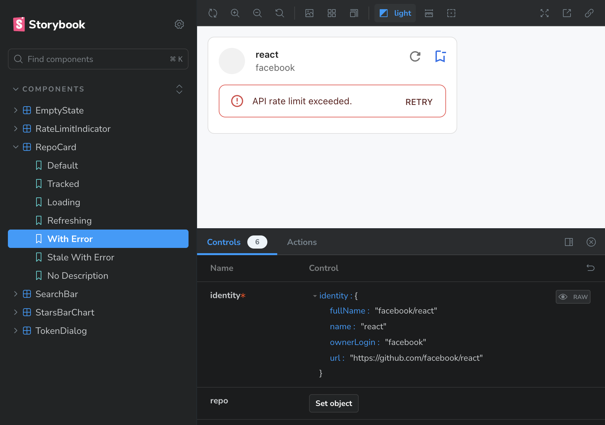
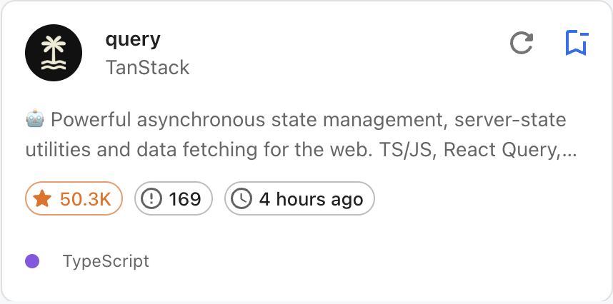
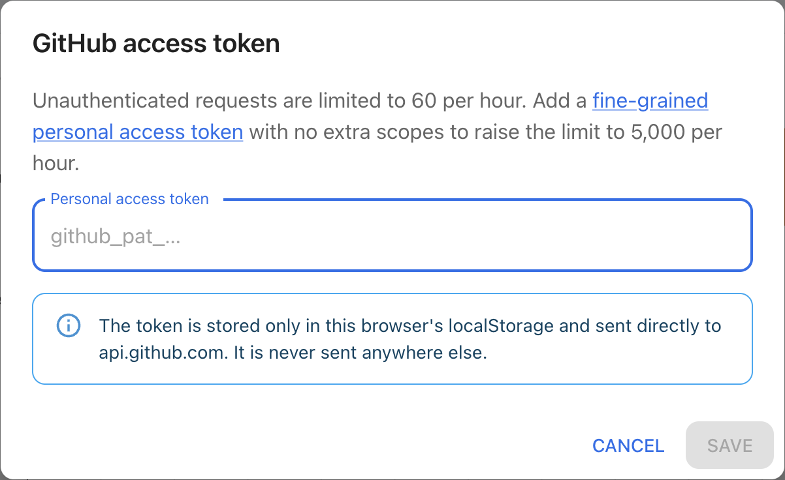
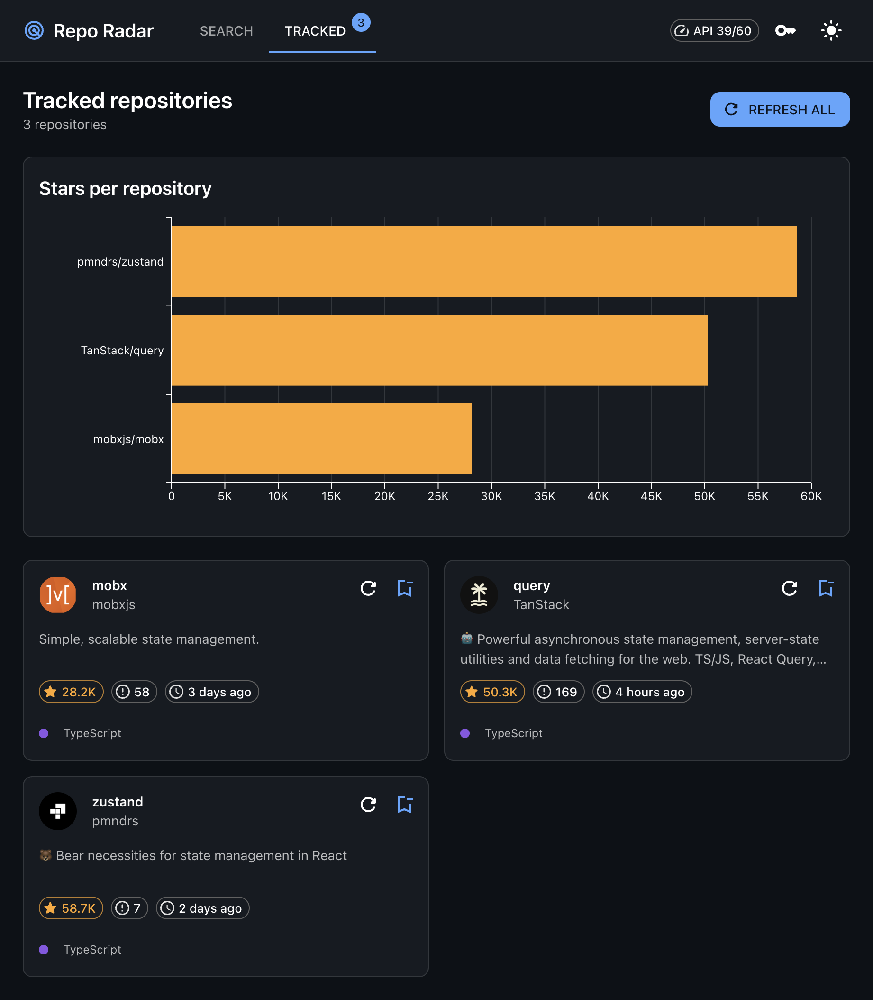
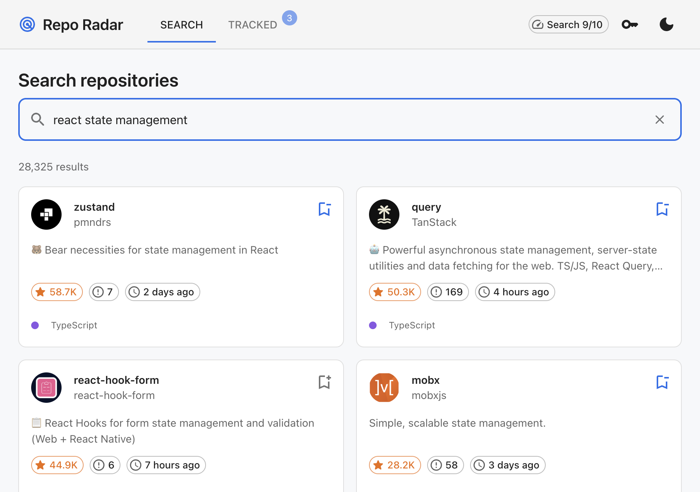
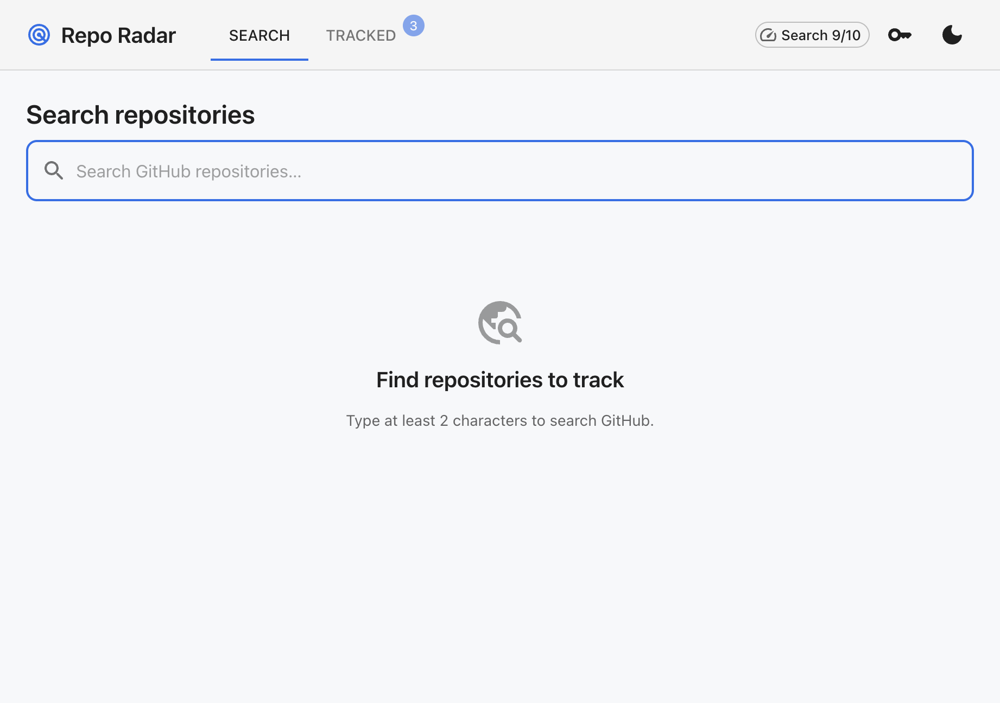
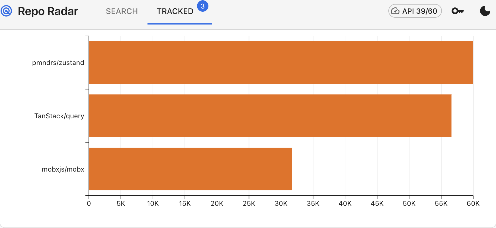

Project Walkthrough — Part 1: Structure & Architecture

core — domain layerstore — data layerui — presentation layerweb — composition layerrepo-radar/
├── apps/
│ └── web/ ← the only deployable thing
├── packages/
│ ├── core/ ← pure TypeScript, zero framework deps
│ ├── store/ ← data layer (Redux Toolkit + RTK Query)
│ ├── ui/ ← presentational MUI components
│ ├── eslint-config/ ← shared tooling config
│ └── typescript-config/ ← shared tooling config
├── turbo.json
├── pnpm-workspace.yaml
└── vercel.jsonapps/ + packages/ split
(the Turborepo convention). The rule is simple: apps/ contains things you
deploy; packages/ contains things you import.
There is exactly one app today, but the shape lets you add apps/storybook-site,
apps/mobile, or apps/api later without reshuffling anything.
The brief said reviewers would judge
“monorepo structure and separation of concerns” and
“reusable/shared components and packages.” A single src/ folder with
subfolders technically works, but
package boundaries are enforced by the tooling, not by convention:
ui tries to import { useAppSelector } from '@repo-radar/store',
it fails — store isn’t in ui’s
package.json dependencies. A folder split can’t stop that; a package split
does.
tsconfig, eslint.config and tests, and
can be type-checked / tested / cached independently by Turborepo.
Dependencies flow in one direction only: core knows nothing,
store and ui know only core, and web knows
everything. store and ui are siblings that never
import each other.
core is the innermost ring.
Why does ui not depend on store? Because that is what makes
ui reusable. RepoCard doesn’t know Redux exists —
it takes repo, isLoading, onRefresh as props. You can
render it in Storybook with fake data, test it without a store, or drop it into a Next.js app
using a totally different state library.

RepoCard renders every state (Default, Tracked, Loading,
Refreshing, With Error, Stale With Error, No Description) in Storybook with no Redux store
and no network.
packages/core — the domain layercore/src/
├── constants.ts # API base URL, debounce ms, storage keys, schema version
├── types/
│ ├── github.ts # GitHubRepoDto, GitHubSearchResponseDto (raw API, snake_case)
│ └── domain.ts # Repo, TrackedRepo, RateLimitInfo, ThemeMode (ours, camelCase)
├── mappers/repo.ts # toRepo(dto), toRepoSearchResult(dto), toTrackedRepo(repo)
└── utils/
├── format.ts # formatCompactNumber, formatRelativeDate, formatCountdown
├── storage.ts # loadFromStorage / saveToStorage with versioned envelope
└── guards.ts # isTrackedRepo, isTrackedRepoList, isThemeMode (runtime checks)Zero dependencies on React, Redux or MUI. It runs in Node, in the browser, in a test — anywhere. Three named patterns live here.
stargazers_countpushed_atowner.avatar_url"] M["toRepo(dto)starslastCommitAtowner.avatarUrl"] UI["ui · store · web
GitHubRepoDto is their shape. Repo is our shape,
containing only fields we actually use. The mapper translates once, at the boundary.
TypeScript types vanish at runtime. Data from localStorage is
unknown — it could be corrupt, from an old version, or hand-edited.
isTrackedRepoList(value): value is TrackedRepo[] checks the shape at runtime and
TypeScript narrows the type when it returns true.
{ "version": 1, "data": [ { "id": 32215970, "fullName": "mobxjs/mobx", ... } ] }
On load, if version doesn’t match or the guard rejects data, the
entry is wiped and the app starts clean instead of crashing.
packages/store — the data layerstore/src/
├── api/
│ ├── baseQuery.ts # wraps fetchBaseQuery: token, rate-limit headers, error normalisation
│ ├── githubApi.ts # createApi: searchRepositories, getRepo
│ ├── apiError.ts # ApiError + toApiError(): 403/429→rate-limit, 404→not-found, …
│ └── rateLimitHeaders.ts # parse x-ratelimit-* headers
├── slices/
│ ├── trackedReposSlice.ts # createEntityAdapter — what the user tracks
│ ├── authSlice.ts # optional PAT
│ ├── settingsSlice.ts # theme mode
│ └── rateLimitSlice.ts # per-resource budget (core vs search)
├── persistence/
│ ├── persistenceMiddleware.ts # listener middleware → storage on specific actions
│ └── storage.ts # loadPersistedState / persist* helpers
├── thunks/refreshAllTrackedRepos.ts
├── rootReducer.ts
├── store.ts # createAppStore({ storage, persist, preloadedState })
├── selectors.ts
├── hooks.ts # useAppDispatch / useAppSelector (typed)
└── index.ts # public API — the ONLY thing other packages importThis is the most important conceptual split in modern React apps. Server state (repo data) is cached, has loading/error states, goes stale, needs refetching. Client state (what I track, my theme, my token) is owned by the user and has none of those concerns. RTK Query handles the first; plain slices handle the second. Copying fetched data into a slice is a classic anti-pattern that produces stale-data bugs.
createEntityAdaptertrackedRepos: {
ids: [32215970, 207645083, 234898203],
entities: {
32215970: { id: 32215970, fullName: "mobxjs/mobx", ... },
207645083: { id: 207645083, fullName: "TanStack/query", ... },
...
}
}
A normalised shape — like a database table with a primary key.
selectIsTracked(id) is an O(1) object lookup rather than an O(n)
array.find. The adapter also provides
addOne / removeOne / setAll reducers and memoised selectors for free.
createAppStore() is a function, not a pre-built
export const store. Tests create a fresh, isolated store per test with an
in-memory storage adapter; the app calls it once in apps/web/src/app/store.ts.
StorageAdapter is injected, so persistence is testable without touching real
localStorage.
index.ts barrel
Only what’s exported from store/src/index.ts is public.
rootReducer.ts, baseQuery.ts etc. are implementation details.
createListenerMiddleware
Persistence doesn’t live inside reducers (reducers must be pure). A listener says “when
repoTracked, repoUntracked or allReposUntracked fires,
write the list to storage.” “What changed” stays separate from “what to do about it.”
packages/ui — the presentation layerui/src/
├── theme/
│ ├── createAppTheme.ts # MUI theme factory (light | dark)
│ └── AppThemeProvider.tsx
├── components/
│ ├── RepoCard/ # RepoCard.tsx + .test.tsx + .stories.tsx
│ ├── SearchBar/
│ ├── StarsBarChart/
│ ├── RateLimitIndicator/
│ ├── TokenDialog/
│ └── EmptyState/ ErrorBanner/ RepoGrid/ StatChip/ RepoStatsRow/ ThemeToggle/ AppShell/
└── index.ts
RepoCard — stars, open issues, last commit, language, refresh + track
actions.

TokenDialog — opt-in personal access token, stored only in the user’s
browser.
Every component in ui is presentational: it receives data and callbacks
via props and has no idea where they come from. The containers live in
apps/web/src/features/ — TrackedRepoCard calls
useGetRepoQuery and passes the result into RepoCard.
RepoCard.tsx, RepoCard.test.tsx and
RepoCard.stories.tsx sit in one folder. Change the component and its test and
story are right there; delete the folder and everything related goes with it.
createAppTheme(mode) is the single source of colours, radii and typography. Cards
are forced to identical dimensions (width: 100%, height: 100%, fixed
two-line description, always-present footer) so the grid reads as a consistent system
regardless of content length.

apps/web — the composition layerweb/src/
├── main.tsx # ReactDOM root
├── App.tsx # AppShell + lazy Routes
├── app/
│ ├── AppProviders.tsx # Redux Provider → Theme → ErrorBoundary
│ ├── store.ts # the single app store instance
│ └── routes.ts
├── components/ErrorBoundary.tsx · NavTabs.tsx
├── features/ # ← the key folder
│ ├── search/ # SearchPage, SearchResultCard
│ ├── tracked/ # TrackedPage, TrackedRepoCard, RefreshAllButton, TrackedStarsChart
│ ├── settings/ # TokenSettings
│ ├── rate-limit/ # RateLimitBadge
│ └── theme/ # ThemeModeToggle
├── hooks/ # useDebouncedValue, useTrackToggle
└── lib/toUserMessage.ts # ApiError → human-readable copy
Instead of grouping by type (components/, hooks/,
containers/), code is grouped by feature (search/,
tracked/). Everything about the Tracked page is in one folder. Adding a feature
adds a folder; removing one removes a folder.

features/search — debounced search, load-more pagination.

Feature components are deliberately small — usually one hook call plus one
ui component. TrackedRepoCard is ~20 lines: call
useGetRepoQuery, map the result to RepoCard props. Logic lives in
store; rendering lives in ui; web just plugs them
together.
web starts growing large components, that’s a smell that logic belongs in a
lower layer.
SearchPage and TrackedPage are React.lazy() imports.
The ~300 kB charts library only downloads when someone visits /tracked; Vite
emits it as a separate chunk.

StarsBarChart reads straight from the RTK Query cache — no extra requests.
AppProviders.tsx is where every provider (Redux, MUI theme, error boundary) is
assembled — the one place that knows about all the layers. Everything below it is unaware of
the wiring.
eslint-config & typescript-config
Shared tooling as packages. Every other package does
"extends": "@repo-radar/typescript-config/react-library.json". Change a compiler
flag or lint rule once and it applies everywhere — the standard Turborepo pattern.
workspace:* protocol links packages by
symlink. One node_modules at the root, no duplicate React copies (which would
break hooks).
package.json dependencies, runs tasks in parallel where possible, and
caches by content hash. Run pnpm test twice without changes
and the second run is instant. dependsOn: ["^build"] means “build my
dependencies first.”
Tracing one interaction — the user opens the Tracked page — shows every layer doing exactly one job:
Each tracked card owns its own cache entry, so isLoading, error and
refetch() are isolated per repo with zero custom bookkeeping — this is how the
“independent loading and error states per repo” requirement is satisfied for free.
x-ratelimit-* headers captured in
baseQuery drive the live API 39/60 budget badge.
| Pattern | Where it lives |
|---|---|
Monorepo, apps/ + packages/ split |
repo root |
| Enforced module boundaries / modular monolith | package.json dependencies |
| Dependency Rule / acyclic dependency graph | core ← store, ui ← web |
| DTO → Domain Model via Mapper (Anti-Corruption Layer) | core/mappers |
| Runtime type guards at boundaries | core/utils/guards.ts |
| Versioned storage envelope (schema migration) | core/utils/storage.ts |
| Server state vs client state | RTK Query vs slices |
Normalised state (createEntityAdapter) |
trackedReposSlice |
| Factory + Dependency Injection | createAppStore({ storage }) |
| Facade / barrel export | every index.ts |
| Listener middleware for side effects | persistenceMiddleware |
| Presentational vs Container components | ui vs web/features |
| Co-location (component folder) | ui/components/* |
| Feature-based folders (vertical slicing) | web/features/* |
| Composition Root | AppProviders.tsx |
| Route-based code splitting | App.tsx lazy routes |